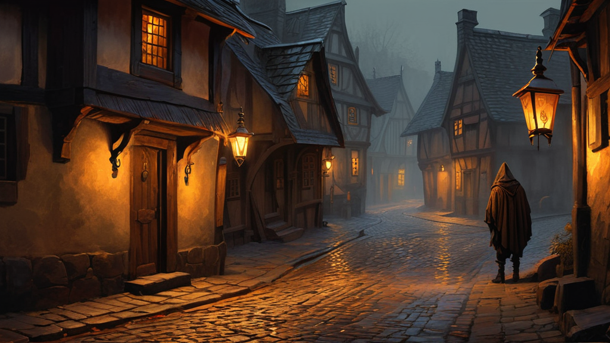
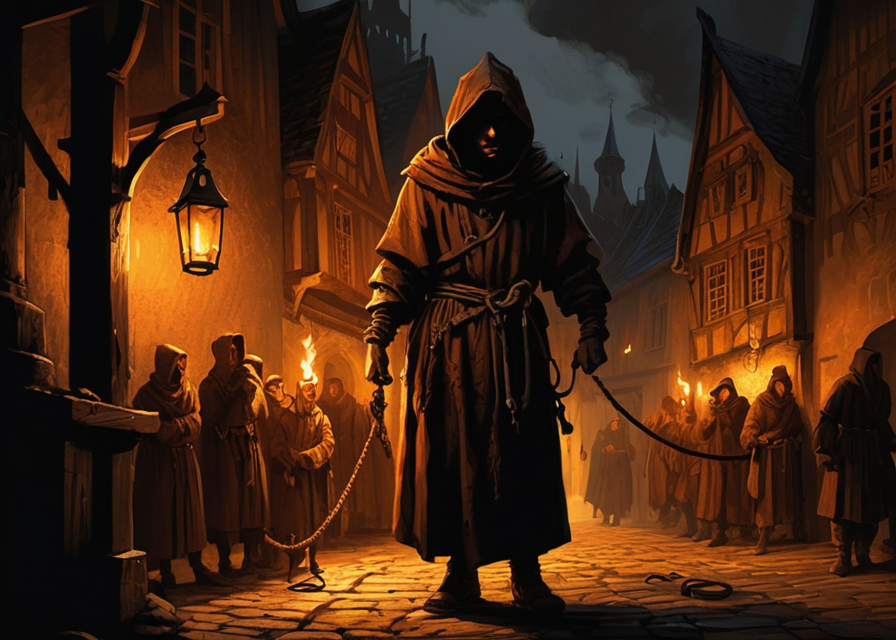
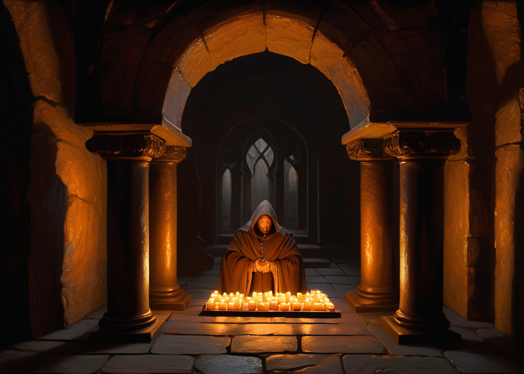
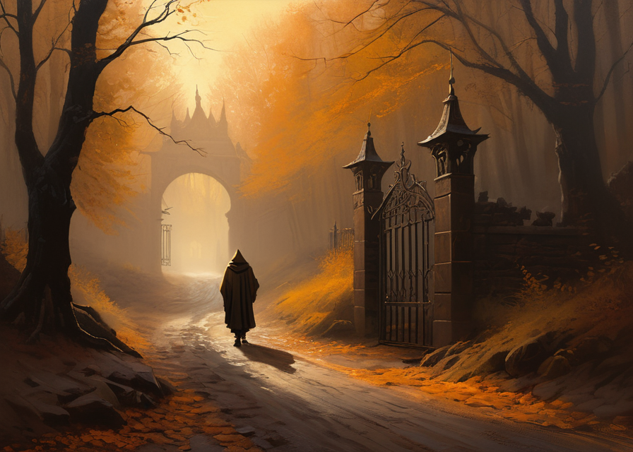

Zanim padnie pierwsza kość
Księga Zasad
WstępCzłowiek, którego nie powiesili
Opowieść wprowadzająca w świat

Świat, do którego wchodzisz, jest stary, mokry i nieżyczliwy. Imperium trzyma się kupą strachu i podatków; na jego skraju, gdzie kończą się brukowane drogi, prawo jest tym, co zdoła wyegzekwować najbliższy człowiek z mieczem. W miastach śmierdzi dymem i rybą, a w zaułkach ginie się za mniej niż bochenek chleba. To nie jest kraina herosów w lśniących zbrojach. To kraina ludzi, którzy próbują dożyć do rana — i czasem, raz na jakiś czas, zrobić coś, co ma znaczenie.
Żeby pokazać ci, jak wygląda życie w tym świecie, opowiem ci o pewnym złodzieju. Nazywał się Mizel, i zaczynał dokładnie tam, gdzie kończy większość jemu podobnych: z powrozem na szyi.
Chłopiec z rynsztoka
Mizel nie pamiętał matki ani domu. Pamiętał za to dachy — śliskie od deszczu gonty, po których umiał biegać, zanim nauczył się czytać. Wychowały go ulice portowego miasta: zimne, gwarne i bezlitosne. Kradł, bo to było jedyne rzemiosło, jakie mu pokazano, i był w nim dobry — zbyt dobry, by przejść niezauważonym. Pewnej nocy zaciasnęła się na nim obława strażników, a tydzień później stał już na zbitym z desek podeście, patrząc, jak kat sprawdza węzeł.

Powieszono by go tamtej nocy, gdyby nie ludzie w ciemnych habitach, którzy rozsunęli tłum bez słowa. Bracia z pewnego zakonu — cisi, uprzejmi, o spojrzeniach, które niczego nie zdradzały — zapłacili katu i zdjęli chłopca z szubienicy, jakby kupowali wół na targu. Nie zrobili tego z litości. Zrobili to, bo widzieli, ile wart jest człowiek, który potrafi wejść tam, gdzie nikt inny nie wejdzie.
Nauka w cieniu
Zakon dał Mizelowi dach, strawę i imię, którego nikt nie ścigał. Dał mu też mistrzów — i przez kilka lat chłopiec z rynsztoka stał się czymś więcej niż drobnym rzezimieszkiem. Nauczono go otwierać zamki, których inni nie umieli nawet nazwać; chodzić tak cicho, że własny cień zostawał w tyle; czytać twarze i kłamać tak, by kłamstwo brzmiało cieplej niż prawda. Mówiono mu, że służy wyższej sprawie.

Dopiero później zrozumiał, po co naprawdę go wyszkolono. To, co bracia nazywali „wyższą sprawą", cuchnęło tak samo jak zaułki, z których go wyciągnięto — tyle że ubrane było w święte słowa i pieczęcie. Widział, co robili z tym, co dla nich wykradał. Widział ludzi, którzy znikali. I pewnej nocy — tej samej, w której zrozumie się o jeden raz za dużo — spakował swoje wytrychy i wyszedł za bramę, nie oglądając się za siebie.

Tak zaczyna się większość historii w tej grze: nie od proroctwa, lecz od decyzji. Mizel umiał tyle samo zła co dobra — i właśnie dlatego jego wybory coś znaczyły. Postanowił obrócić swoje rzemiosło ku ludziom, którym nikt nie pomagał: tym z rynsztoka, z których sam pochodził. Świat nie stał się przez to ani odrobinę łaskawszy. Ale teraz miał w nim kogoś, kto się nie poddał.
Twoja postać zacznie podobnie — z przeszłością, blizną i jednym powodem, by ruszyć dalej. To, co wydarzy się potem, nie jest zapisane. Rozstrzygną to twoje decyzje, słowa, które wypowiesz przy stole — i kość, która zadecyduje, gdy stawka będzie zbyt wysoka, by pewność była możliwa. Jak działa ta kość, dowiesz się na następnej stronie.
Rozdział pierwszy
I · MechanikaTest umiejętności
Serce każdej niepewnej chwili
Większość tego, co robisz w tej grze, udaje się bez żadnego rzutu. Przejdziesz przez izbę, dobędziesz miecza, zapytasz karczmarza o drogę — a Mistrz Gry po prostu opowie, co się dzieje, i gra toczy się dalej. Kość budzi się dopiero wtedy, gdy splatają się dwie rzeczy naraz: coś jest dla ciebie naprawdę ważne i wynik nie jest pewny. Wspinasz się po oblodzonym murze nad przepaścią. Próbujesz spojrzeć w oczy strażnikowi i skłamać tak, by ci uwierzył. Łapiesz spadającą latarnię, zanim podpali stodołę. W takich chwilach — i tylko w takich — sięgasz po kość.
Wszystkie one rozstrzygają się w jeden sposób. Rzucasz k20k20Kość dwudziestościenna — jedyna kość, którą rozstrzygasz testy. Daje wynik od 1 do 20, każdy równie prawdopodobny., dorzucasz do niej to, w czym jesteś dobry, i porównujesz sumę z Progiem TrudnościPróg Trudności (PT)Liczba, którą musisz osiągnąć. Im trudniejsze zadanie, tym wyższa. 8 łatwe · 12 średnie · 16 trudne · 20 ekstremalne · 24+ legendarne., który ustala Mistrz Gry. Dorównasz progowi lub go przekroczysz — udaje się. Nie dorównasz — nie wychodzi. To jedna reguła; nauczysz się jej raz i poniesie cię przez całą grę.
Zanim rozłożymy te premie na czynniki, zobaczmy regułę w działaniu — bo dopiero przy stole nabiera ona ciała.
Deszcz bębni o deski mostu. Po drugiej stronie szlabanu stoi celnik w przemoczonej pelerynie, jedną dłoń trzymając na trzonku halabardy.
CelnikMyto — pięć złotych albo zawracaj, wędrowcze. Most zamknięty po zmroku, a noc blisko.Mierzy cię wzrokiem od zabłoconych butów po kaptur. W sakiewce masz dwie monety, a za plecami żadnej drogi w bok.
GraczPatrzę mu prosto w oczy i mówię spokojnie: jadę z pilnym listem do garnizonu, a komendant nie będzie łaskaw dla człowieka, który zatrzymał mnie w deszczu.To blef — nie masz żadnego listu. Próbujesz go przekonać tonem pewności i groźbą wiszącą w tle. Celnik mruży oczy; widać, że się waha. Mistrz Gry uznaje, że człowiek jest nieufny, ale zmęczony i niechętny kłopotom — ustala próg Średni (12)Próg TrudnościŚredni = 12. Typowe wyzwanie dla wprawnej osoby; tu: nieufny, lecz zmęczony strażnik.. Rzucasz na Perswazję.
k20 = 13 + 2 (Charyzma 14) + 1 (Perswazja, ranga 1) = 16 vs PT 12 → margines +4
Sukces. Celnik prycha, ale unosi szlaban.
Nie uwierzył do końca — lecz uznał, że ryzyko kłopotu nie jest warte dwóch złotych, których i tak przy tobie nie dostrzegł. Gdyby rzut wypadł o kilka oczek gorzej, historia potoczyłaby się inaczej — i właśnie o to chodzi. Kość nie mówi „tak" albo „nie". Mówi, w którą stronę przechyli się scena.
Z czego składa się twój wynik
Do surowego rzutu kością dokładasz trzy liczby. Każda opowiada inną część prawdy o tym, jak twoja postać radzi sobie akurat z tym zadaniem: ile ma wrodzonego talentu, ile wyćwiczonej wprawy i czy doszła już do prawdziwego mistrzostwa.
Modyfikator cechy — wrodzony talent
Każdą postać opisuje siedem cechSiedem cechSiła, Zręczność, Kondycja, Inteligencja, Mądrość, Charyzma i Szczęście. 10 to ludzka przeciętność. Szczegóły w rozdziale II.: Siła, Zręczność, Kondycja, Inteligencja, Mądrość, Charyzma i Szczęście. Wartość 10 to zwykła ludzka średnia. Do rzutu nie dopisujesz jednak samej wartości, lecz modyfikatorModyfikator cechy= (cecha − 10) ÷ 2, zaokrąglone w dół. Cecha 14 → +2, 10 → +0, 8 → −1, 18 → +4. — to, o ile twoja postać odstaje od przeciętności:
Charyzma 14 daje więc +2, przeciętna 10 daje +0, a niezgrabna 8 to −1. Mistrz Gry wskazuje, która cecha rządzi danym testem — i często zależy to od tego, jak opiszesz swoje działanie. Wyważasz drzwi ramieniem? Siła. Otwierasz je wytrychem? Zręczność. Przekonujesz strażnika ciepłym słowem albo cichą groźbą? Charyzma. To dlatego warto mówić, w jaki sposób coś robisz — z opisu wynika reszta.
Ranga umiejętności — wyuczona wprawa
Tam, gdzie cecha mówi o talencie danym od urodzenia, ranga umiejętnościRanga umiejętnościPoziom wyćwiczenia konkretnej umiejętności (Skradanie, Perswazja, Medycyna…), zwykle 1–3. Dodawana wprost do rzutu: ranga 2 → +2. mówi o latach ćwiczeń. Skradanie, Perswazja, Wiedza Tajemna, Medycyna — każdej uczysz się osobno i każda ma swoją rangę, zwykle od 1 do 3. Rangę dopisujesz do rzutu wprost: kto ma w Skradaniu rangę 2, dolicza +2. Im dłużej szlifujesz dane rzemiosło, tym pewniejsza twoja dłoń.
Premia z biegłości — pieczęć mistrzostwa
Gdy ranga w umiejętności sięga 3, przekraczasz granicę między „umiem to" a mistrzostwem. Od tej chwili każdy test tą umiejętnością niesie dodatkową premię z biegłości +2Premia z biegłościDodatkowe +2 doliczane automatycznie, gdy twoja ranga w umiejętności osiąga 3. Nagroda za prawdziwą specjalizację.. To nagroda za głębię, nie szerokość — powód, dla którego opłaca się doprowadzić jedno rzemiosło do perfekcji, zamiast liznąć dziesięciu po wierzchu. Mistrz złodziei z rangą 3 w Skradaniu dolicza do rzutu rangę i premię: razem +5, zanim jeszcze doda swoją Zręczność.
Próg Trudności
Zanim padnie kość, Mistrz Gry ustala prógPróg Trudności (PT)Liczba do pokonania. Wynika z okoliczności — nie zgadujesz jej. Patrz skala obok. — liczbę, którą musisz osiągnąć. Nie wymyśla jej z powietrza; wyrasta ona z okoliczności. Oto skala, na której wspiera się cała gra:
| PT | Trudność | Kiedy |
|---|---|---|
| 8 | Łatwe | Sprzyjające warunki, właściwe narzędzie, spokój. |
| 12 | Średnie | Typowe wyzwanie dla wprawnej osoby. |
| 16 | Trudne | Pośpiech, ciemność, brak narzędzi, presja. |
| 20 | Ekstremalne | Na granicy ludzkich możliwości. |
| 24+ | Legendarne | Czyny, o których śpiewa się pieśni. |
Sprawiedliwy próg
Dobry Mistrz Gry dobiera trudność do twojej postaci i twoich narzędzi. Bohater 1. poziomu z dobrym wytrychem otwiera prosty zamek przy progu Łatwym lub Średnim — nie Trudnym. Szesnastka i wyżej należy do chwil, gdy naprawdę wszystko sprzysięga się przeciwko tobie: ciemność, pośpiech, drżące ręce. Rutyna nie powinna być karą.
Jak czytać wynik
Rzuć, dodaj premie, porównaj z progiem. Ale wynik to nie tylko „udało się" albo „nie". Liczy się marginesMarginesRóżnica: twój wynik − PT. Decyduje, jak bardzo się udało (lub nie). +5 i więcej → krytyk; −5 i mniej → krytyczna porażka. — o ile twój wynik pobił próg albo do niego nie dosięgnął. To on rozstrzyga, czy sukces jest gładki czy spektakularny, a porażka drobna czy katastrofalna. Każdy test umiejętności kończy się na jednym z czterech stopni:
Dwa wyniki na kości mają moc absolutną, niezależną od premii i progu. Naturalna 20Naturalna 20Sama kość pokazuje 20 — zawsze sukces krytyczny, choćby próg był wysoki. „Naturalna", bo liczy się goła kość, przed premiami. — sama kość pokazuje dwadzieścia — to zawsze sukces krytyczny. Naturalna 1Naturalna 1Sama kość pokazuje 1 — zawsze porażka krytyczna z komplikacją, niezależnie od premii. to zawsze porażka krytyczna. Choćby próg był śmiesznie niski albo niebotyczny — goła kość ma ostatnie słowo.
Bez liczb przy stole
Te progi i marginesy to maszyneria pod maską. Przy stole Mistrz Gry nie wyrecytuje ci „margines +6, sukces krytyczny" — opowie, jak bezszelestnie wtapiasz się w cień, a strażnik mija cię o krok, nic nie przeczuwając. Liczby liczy system; ty słyszysz historię.
Kość w ferworze walki
Ta sama reguła nie znika, gdy dobywasz broni. W walce wymiana ciosów ma własne, dokładniejsze zasady — opisuje je rozdział o WalceRozdział IV — WalkaTrafienia i obrażenia rządzą się osobnymi regułami: naturalna 20 podwaja obrażenia, a margines nie wpływa na same ataki. Tu pokazujemy test umiejętności w środku walki. — lecz w wirze starcia wciąż raz po raz robisz coś, co jest testem umiejętności: odskakujesz, łapiesz równowagę, wspinasz się, gasisz płomień na rękawie. Takie chwile rozstrzygasz dokładnie tak, jak nauczyłeś się przed chwilą.
Pierwszy wilk pada od twojego cięcia, lecz drugi już jest w powietrzu — kłębek mokrej sierści i kłów, mierzący prosto w twoje gardło. Nie zdążysz znów zamachnąć się mieczem. Masz ułamek chwili, by zejść z linii skoku.
GraczRzucam się w bok, w mokre paprocie, byle zejść mu z drogi!To unik — gwałtowny, instynktowny ruch całego ciała. Liczy się tu czysta zwinność, więc Mistrz Gry wzywa rzut obronny ZręcznościRzut obronnyTest cechy, gdy coś dzieje się tobie i musisz tego uniknąć (skok bestii, pułapka, podmuch ognia). Liczysz k20 + modyfikator samej cechy, bez umiejętności.. Bestia jest szybka — próg Trudny (16)Próg TrudnościTrudny = 16. Wysoka poprzeczka: zwinny, rozpędzony drapieżnik..
k20 = 17 + 2 (Zręczność 15) = 19 vs PT 16 → margines +3
Sukces. Kły kłapią o próżnię tam, gdzie mgnienie wcześniej było twoje gardło. Lądujesz na ramieniu w błocie, wilk przelatuje nad tobą i ląduje niezgrabnie — na moment odsłaniając bok. Przewaga wraca do ciebie.
A gdyby na kości padła naturalna 1Naturalna 1Goła jedynka — zawsze porażka krytyczna. Nieważne, jak wysoka Zręczność.? Nie po prostu „nie zdążasz" — noga grzęźnie w korzeniu, tracisz równowagę, a wilk wbija się w ciebie całym ciężarem. Porażka krytyczna nie odbiera tylko sukcesu; dorzuca nieszczęście.
Dwie sceny, dwa różne testy — rozmowa na moście i skok o włos od kłów — a pod spodem ta sama, jedyna reguła: kość, premie, próg, margines. Opanuj ją tutaj, a będzie ci służyć w każdej niepewnej chwili tego mrocznego świata: od targu na rynku po ostatni cios w ciemnej krypcie.